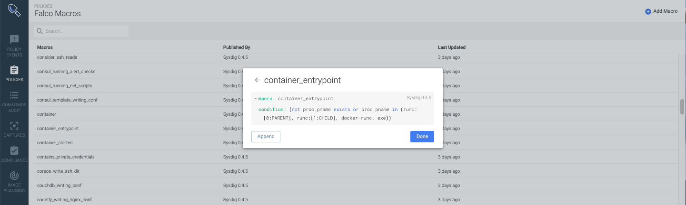

SaaS: Sysdig Secure Release Notes
November 13, 2019
Activity Audit (Beta)
The Activity Audit in Sysdig Secure allows you to browse a live stream of activity from your Kubernetes containers and nodes. Audit takes the highly detailed data from syscalls and Kubernetes audit logs captured at the agent level, and makes it always-on, searchable, and indexed against your cloud-native assets.
This stream includes executed commands, network activity, and kubectl exec requests to the Kubernetes API. The Activity Audit allows users to view different data sources in-depth for monitoring, troubleshooting, diagnostics, or to meet regulatory controls (SOC2, NIST, PCI, etc).

Flexible filtering and scoping to help you focus on what’s relevant: Filters allow you to search, sort, and surface meaningful data and connections as they are needed. You can filter by data source type, data source attributes (like command name or Kubernetes user) and dynamic Kubernetes scope

Automatically trace a kubectl exec session : The built-in trace functionality allows you to isolate and trace a kubectl exec access to a pod, automatically correlating the original Kubernetes user and IP that accessed the pod with the activity that was performed during the interactive session, including commands and network connections.
Kubernetes Policy Advisor (Beta)
With the Kubernetes Policy Advisor, Sysdig Secure auto-generates Pod Security Policies (PSPs) to significantly decrease the time spent configuring Kubernetes Policies. Strict security policies reduce risk, but can also break applications. Sysdig tests the impact of pod security policies through simulations, enabling teams to adjust misconfigurations before shifting to production. There are three main features that comprise the Kubernetes Policy Advisor:
Auto generation: Sysdig Secure can parse any Kubernetes yaml file that includes a pod spec to generate a tailor-made PSP based on the configuration.

Simulations: Start a simulation of the auto-generated PSP or any user-inputted PSP to see what pods would have been blocked from running if this PSP had been actively applied to the cluster.

Events and tuning: Each pod/activity that would have violated the PSP will generate an event. Within the event details, users can see information about potential modifications they may need to make to the policy or the pod configuration.

Image Scanning Improvement
Support for images based on Google distro-less OS, including detection of base OS/version and installed OS dpkg packages.
November 4, 2019
Scanning Improvements
New Scanning Rules
File attributes can now be verified as part of the image scan analysis. A specific file can be validated against a node or sha256 hash.
Scale Improvements to Scanning Reporting
No query conditions are required as part of the Package and Policy Queries.
October 10, 2019
In-Line Scanning
Images can now be analyzed locally before they are pushed to a registry. This has a couple key benefits to users.
Images can be analyzed before they’re pushed to a registry and reduce registry cost
Customers using the Sysdig Secure SaaS offering don’t need to expose their registry to our SaaS for images to be scanned
For openshift customers the in-lince scan option can be integrated into the S2I process to scan images without needing to expose a local cluster registry via a route
Learn more and access the script here: https://github.com/sysdiglabs/secure-inline-scan
Sysdig CLI
The Sysdig CLI provides an easy way to interact with the cli via the command line. Read more here.
Usage
Run it without parameters to get a list of all the commands.
$ sdc-cli
Usage: sdc-cli [OPTIONS] COMMAND [ARGS]...
You can provide the monitor/secure tokens by the SDC_MONITOR_TOKEN and
SDC_SECURE_TOKEN environment variables.
Options:
-c, --config TEXT Uses the provided file as a config file. If the config
file is not provided, it will be searched at
~/.config/sdc-cli/config.yml and /etc/sdc-cli/config.yml.
-e, --env TEXT Uses a preconfigured environment in the config file. If
it's not provided, it will use the 'main' environment or
retrieve it from the env var SDC_ENV.
--json Output raw API JSON
--version Show the version and exit.
--help Show this message and exit.
Commands:
alert Sysdig Monitor alert operations
backup Backup operations
capture Sysdig capture operations
command Sysdig Secure commands audit operations
compliance Sysdig Secure compliance operations
dashboard Sysdig Monitor dashboard operations
event Sysdig Monitor events operations
policy Sysdig Secure policy operations
scanning Scanning operations
settings Settings operations
profile Profile operations
New Package Reports
Package name/version are now grouped together to provide easy parsing of all CVE’s associated with a package and the images using that package.

Sept 24, 2019
New Trigger Parameters for CVSS Score
Image Vulnerabilities can now be evaluated against their CVSS (Common Vulnerabilities Scoring System) score. If a vulnerability is =, <;>, <=, or >= to a specific score, then the rule can trigger a warn/stop action.

Sept 18, 2019
Time Ranges Updated
The default time range options have been updated in Sysdig Secure.
The default time ranges are now set to:
10 Minutes
30 Minutes
1 HR
6 HRs
1 Day
3 Days
To look at a custom window of time, use the manual time window.
Sysdig Secure Summary Dashboard in Sysdig Monitor
Sysdig Monitor includes default dashboards that provide metrics about number of agents installed, active policies, events that have occurred, and the policies that have triggered them. Use these dashboards to identify trends, report on coverage, or facilitate the tuning process.

Aug 12, 2019
Policy Editor
*Please upgrade to an agent version 0.92.0 or greater
This UX overhaul brings three major improvements for every Sysdig Secure user:
Runtime policies can import any number of security rules. You can scope the security policy using container, cloud and Kubernetes metadata.
Tighter Falco integration, directly from the web UI. You will be able to define a new trigger condition or append to the list of forbidden external IPs just clicking on the rule.
A more structured way to group, classify and lookup rules, following the standard Cloud native procedure: tags and labels.
Rules Library
Visualize your runtime rules properties in just a glance:
Where this rule comes from (Published By). The security team can instantly recognize whether a rule came from a specific Sysdig update, from a custom rules file created within the organization or from an external rules source (like the Falco community rules).
When was the last time it was updated (Last Updated). You can use this information to audit your rules or if you schedule periodic updates, to confirm when last happened.
Rule tags: An effective method for organizing your rules. You can use these tags to describe the targeted entity (host, k8s, process), the compliance standard it belongs to (MITRE, PCI, CIS Kubernetes) or any other criteria you want to use to annotate your rules.
 |
Falco Lists
Easily browse, append, and re-use lists to create new rules. Lists can also be updated directly via API if users want to add existing feeds of malicious domains, or IPs.
 |
Falco Macros
Easily browse, append, and re-use macros to create new rules.
|  |
Image Scanning - View Scan Results
Scan Results Page - The existing repositories page has been renamed "Scan Results" this page also includes new capabilities to filter based on where the images are deployed, and to easily browse/expand the different repositories to see the image:tag's that were evaluated and their results
 |
Whitelist labels available in vulnerabilities view - If a vulnerability has been added to a whitelist then that status is reflected in the Vulnerability report within the scan results.
 |
Image Scanning Reports
Overview
Please contact Sysdig Support to enable this feature
The reports feature allows users to query the contents of a scan against a static or run-time scope to generate a report that shows the risk, exposure, or components of an image.
Use cases could include:
A new CVE has been announced, let me find all the running images in my US East Cluster that are exposed to that CVE
Show me all images within my Google Container registry that have the tag prod and have a vulnerability with a fix that's more than 30 days old
Show me all images with a high severity vulnerability with a fix that are running in my billing namespace
Types of Scanning Reports
There are three types of queries in the image scanning Reports:
Vulnerability Query Type
This report returns rows of vulnerabilities mapped to packages within images in a static or run-time scope. In the example above we can see the two images that are actively running in my environment now that have the CVE - CVE-2017-8831
Package Query Type
This report shows all images actively running in my environment that have a version of the bash package. It also shows if multiple images are running the same package name & version and if there are any CVE's associated.
Policy Reports
Policy reports show all the policy evaluations that have occured, whether or not they passed or failed, and the reason why an image may have passed or failed. Reasons for passing or failing could be because of, whitelists, blacklists, or just a standard policy evaluation.
July 12, 2019
Minor Improvements
Compliance Dashboards in MonitorLink from Sysdig Secure now defaults to a 90-day view, to give users better visibility into how their posture is changing over time.
Image ScanningNegligible vulnerabilities are now also shown as part of the scan results summary.
June 27, 2019
Image Scanning: New Trigger Options
New Image Analyzed - Send notifications to different channels when images with a particular registry, repo, tag are scanned.
Some users implement these type of alerts for implementing workflows for image promotion, i.e.
"Push an image from staging to prod registry after a webhook is sent that the image was scanned and it passed."
CVE Update - Be notified whenever a vulnerability is added, updated, or removed from an image within a registry.
Repository Alerts
Receive alerts about activity and changes that occur within your registry. See Manage Scanning Alerts.
 |
Slack Notifications
Sample output of a CVE alert:
 |
Sample output of an image-analyzed alert:
 |
Note
For earlier releases, please see Sysdig Secure SaaS Release Notes, here.